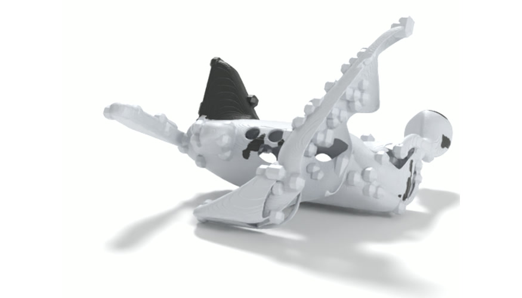
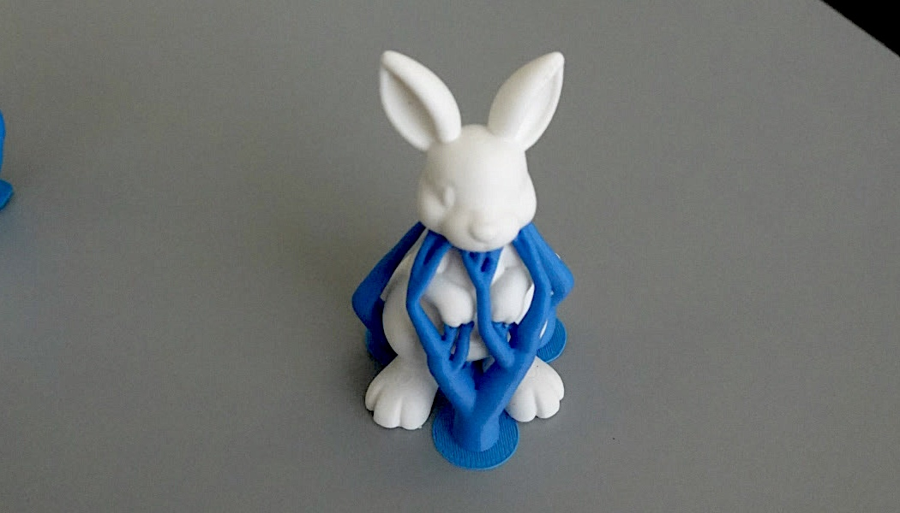
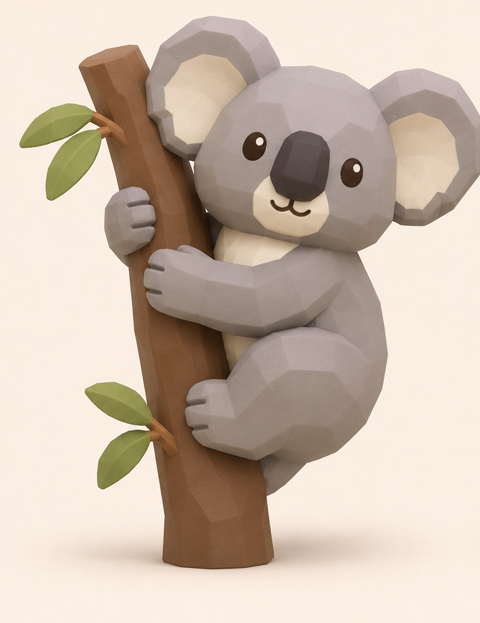
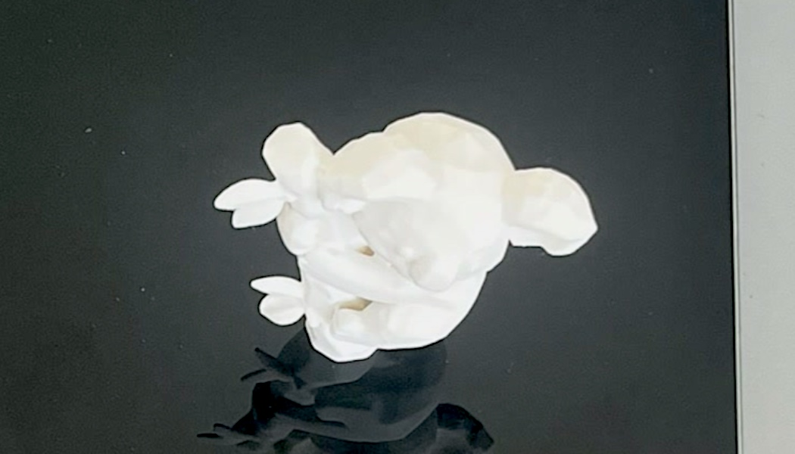

Bridge
PhysRL3D-SAS · filmed views.
Accelerated playback · camera stabilised.
SIX SAS EXAMPLES · ONE CONTINUOUS SPACE
Remove supports. Look inside. Observe the generated pose.
Support removal is illustrative. Cutaways show the surface mesh, not printed infill. The 10 s standing replay is a precomputed MuJoCo run on the original source mesh (uniform solid, flat ground, no push), not the paper benchmark and not a physical test.
What is measured? ↗SIMULATION · SLICING · SAME INPUT
Browse every group. Switch between geometry, sliced supports, cutaways and the standing replay using the controls on the right. All physical prints are collected in Real 3D prints below.
ONE INPUT · SIDE-BY-SIDE COMPARISON
Matched views, a shared rotation rate, and the simulation and slicer evidence behind each example.
SIMULATION ONLY · NOT PRINTED
Archived rigid-body simulation states of the TRELLIS.2 airplane, at release and after release. It tips over in simulation and was not printed; tipping here does not mean the shape cannot be printed.


Availability is model-version specific. Cat, poodle, Christmas tree and penguin have sliced-support bundles. Koala and kangaroo have current display models and real-print evidence, but no verified support bundle bound to these GLBs. Penguin has no verified baseline bound to this viewer. The displayed bundle is labelled explicitly, and missing evidence is never replaced with another model’s data.
Measured prints and slicer estimates are separate. Koala and kangaroo: 100 mm real prints, read at 1 g resolution; support share = supports ÷ measured total. These measurements are not bound to the 60 mm viewer meshes or their illustrative blue supports.
Sliced-support bundles. Support share = support ÷ (model-channel material + support); the model channel includes brim where used. Purge and prime-tower material are excluded. Blue fragments in these bundles sample actual sliced support paths. Breaking, sweeping and collecting are illustrative, not weight calculations. Slicer data and definitions ↗
Cutaways show the display mesh. The cyan contour is its intersection with a horizontal plane. We do not infer internal walls, infill, or G-code. Automatic turntables rotate display wrappers only and stop during the standing phase; stored simulation poses remain unchanged. Koala and kangaroo are independently display-normalised; their onscreen sizes must not be used to compare physical dimensions.
Standing replays are precomputed MuJoCo runs, shown for the cat, poodle, Christmas tree and kangaroo. Each 10-second replay starts from the original generated pose on the full-resolution source mesh: uniform solid (1,240 kg/m³), convex-hull contact with a flat plane, zero initial velocity and no push. Every model is rerun at half the timestep. Mesh debris below 0.1% of the volume is excluded; each Christmas tree loses one detached fragment of about 1 mm or smaller. The tilt readout measures rotation from the original pose, not printability. Uniform-solid dynamics differ from the mass distribution of a sliced print and from the paper’s evaluation, so a replay can disagree with a physical print. Real prints are shown separately below. Trajectories and diagnostics: static/standing-20261119/<model>.json.
REAL 3D PRINTS
Every physical print on this page is collected here, printed on a Bambu Lab H2D and inspected after support removal. Each object keeps its input, print photos, support-removal evidence, video and measured mass together. Simulation and slicer evidence stays in the sections above.
Bambu Lab H2D, PLA, the slicer's default tree supports and 15% infill; white = object, blue = support. Weights are read from a kitchen scale with 1 g resolution, with the supports attached and after removing them.
FILMED, NOT RENDERED
Every angle. Then let go.
PhysRL3D-SAS · filmed views.
Accelerated playback · camera stabilised.
PhysRL3D-SAS · filmed views.
Accelerated playback · camera stabilised.
PhysRL3D-SAS · filmed views.
Accelerated playback · camera stabilised.
PhysRL3D-SAS · filmed views.
Accelerated playback · camera stabilised.
PhysRL3D-SAS · filmed views.
Accelerated playback · camera stabilised.
PhysRL3D-SAS · filmed views.
Accelerated playback · camera stabilised.
TRELLIS.2 left · SAS right.
0.5× playback · final frames held.
TRELLIS.2 left · SAS right.
0.5× playback · final frames held.
TRELLIS.2 left · SAS right.
0.5× playback · final frames held.
TRELLIS.2 left · SAS right.
0.5× playback · final frames held.
Standing views, not release tests.
TRELLIS.2 left · SAS right.
0.5× playback · final frames held.
Standing views, not release tests.
SAS left · TRELLIS.2 right.
0.5× playback · final frames held.
Standing views, not release tests.
One printed object, all its evidence.
Choose an object to see its input, prints, footage and weights.
Kangaroo · group 1 of 4
EXAMPLE 01 · PAIRED REAL PRINTS

Both prints use about 2 g of support. After removal, the TRELLIS.2 kangaroo falls over and the PhysRL3D-SAS kangaroo stands. The SAS body is heavier: 15 g against 11 g.
TRELLIS.2
 with supports
with supports supports removed
supports removedPhysRL3D-SAS

with supports supports removed
supports removed| Method | With supports | Body | Supports | After removal |
|---|---|---|---|---|
| Kangaroo, TRELLIS.2 | 13 g | 11 g | 2 g (15%) | falls over |
| Kangaroo, PhysRL3D-SAS | 17 g | 15 g | 2 g (12%) | stands |
EXAMPLE 02 · PAIRED REAL PRINTS

Both koalas weigh 22 g with their supports and both stand once the supports are removed. The PhysRL3D-SAS body weighs 17 g against 19 g for TRELLIS.2, but its supports weigh 5 g against 3 g.
TRELLIS.2
 with supports
with supports
supports removedPhysRL3D-SAS
 with supports
with supports supports removed
supports removed| Method | With supports | Body | Supports | After removal |
|---|---|---|---|---|
| Koala, TRELLIS.2 | 22 g | 19 g | 3 g (14%) | stands |
| Koala, PhysRL3D-SAS | 22 g | 17 g | 5 g (23%) | stands |
EXAMPLE 04 · PAIRED REAL PRINTS

With supports attached, the PhysRL3D-SAS tree weighs 19.0 g against 32.1 g for TRELLIS.2. After support removal the bodies weigh 14.3 g and 23.1 g.
| Method | With supports | Body | Supports |
|---|---|---|---|
| Christmas tree, TRELLIS.2 | 32.1 g | 23.1 g | 9.0 g (28%) |
| Christmas tree, PhysRL3D-SAS | 19.0 g | 14.3 g | 4.7 g (25%) |
EXAMPLE 05 · REAL PRINTS
Two physical penguin prints after support removal. They come from a later penguin input than the one in the 3D viewer above. One print weighs 10.0 g after support removal; its method and with-supports mass were not recorded.
These selected objects were scaled to 100 mm. Kangaroo and koala weights were read at 1 g resolution. Do not compare these measured values directly with Table 2’s slicer estimates.
QUANTITATIVE RESULTS
Among the evaluated methods, SAS has the highest standable rate and the lowest total and support material on all three benchmarks.
| Method | Stand. (%) ↑ | Sim. (%) ↑ | Total (g) ↓ | Total Δ (%) ↓ | Support (g) ↓ | Support share (%) ↓ | CD ↓ | F-score ↑ | CLIP ↑ | KD ↑ |
|---|---|---|---|---|---|---|---|---|---|---|
| TRELLIS.2 | 84.8 | 95.4 | 14.81 | — | 2.92 | 19.7 | 15.32 | 0.954 | 92.84 | 16.40 |
| DSO-DPO | 85.3 | 96.3 | 14.74 | -0.4 | 2.92 | 19.8 | 15.51 | 0.949 | 92.87 | 16.40 |
| DSO-DRO | 85.4 | 95.6 | 14.84 | +0.2 | 2.96 | 20.0 | 15.42 | 0.951 | 92.85 | 16.37 |
| SEG | 85.3 | 96.0 | 14.77 | -0.2 | 2.97 | 20.1 | 15.29 | 0.952 | 92.89 | 16.47 |
| + DensiCrafter | 94.5 | 97.8 | 15.46 | +4.5 | 5.33 | 34.4 | 16.97 | 0.953 | 90.69 | 12.53 |
| PhysRL3D-SAS | 98.2 | 99.8 | 13.06 | -11.8 | 2.29 | 17.5 | 12.78 | 0.981 | 93.73 | 17.53 |
| Method | Stand. (%) ↑ | Sim. (%) ↑ | Total (g) ↓ | Total Δ (%) ↓ | Support (g) ↓ | Support share (%) ↓ | CD ↓ | F-score ↑ | CLIP ↑ | KD ↑ |
|---|---|---|---|---|---|---|---|---|---|---|
| TRELLIS.2 | 60.1 | 81.4 | 10.81 | — | 2.26 | 20.9 | 33.06 | 0.777 | 87.44 | 9.96 |
| DSO-DPO | 59.0 | 80.6 | 10.41 | -3.7 | 2.37 | 22.8 | 34.11 | 0.764 | 87.50 | 9.94 |
| DSO-DRO | 59.3 | 81.2 | 10.53 | -2.6 | 2.38 | 22.7 | 33.93 | 0.766 | 87.52 | 10.00 |
| SEG | 59.4 | 80.1 | 10.40 | -3.8 | 2.36 | 22.7 | 34.14 | 0.763 | 87.47 | 9.96 |
| + DensiCrafter | 80.7 | 90.3 | 11.54 | +6.5 | 4.24 | 36.8 | 33.20 | 0.786 | 86.25 | 8.60 |
| PhysRL3D-SAS | 93.6 | 96.4 | 8.74 | -19.2 | 1.26 | 14.4 | 32.04 | 0.785 | 88.72 | 10.76 |
| Method | Stand. (%) ↑ | Sim. (%) ↑ | Total (g) ↓ | Total Δ (%) ↓ | Support (g) ↓ | Support share (%) ↓ | CD ↓ | F-score ↑ | CLIP ↑ | KD ↑ |
|---|---|---|---|---|---|---|---|---|---|---|
| TRELLIS.2 | 68.6 | 88.9 | 12.93 | — | 2.62 | 20.2 | 48.29 | 0.669 | 85.75 | 5.84 |
| DSO-DPO | 59.0 | 88.5 | 12.88 | -0.4 | 2.98 | 23.1 | 49.31 | 0.648 | 85.70 | 5.84 |
| DSO-DRO | 63.0 | 89.5 | 13.19 | +2.0 | 3.15 | 23.9 | 50.01 | 0.647 | 85.89 | 5.94 |
| SEG | 57.1 | 86.4 | 12.66 | -2.1 | 3.03 | 23.9 | 48.71 | 0.651 | 85.79 | 5.89 |
| + DensiCrafter | 82.6 | 90.0 | 13.35 | +3.2 | 4.06 | 30.4 | 48.68 | 0.669 | 84.85 | 5.21 |
| PhysRL3D-SAS | 97.7 | 97.9 | 11.03 | -14.7 | 1.39 | 12.6 | 52.87 | 0.628 | 86.99 | 7.05 |
A visible trade-off: SAS improves standability and material use, but its CD and F-score trail TRELLIS.2 on Toys4K.
Stand. Component-wise static balance on a 64³ grid. Sim. The separate MuJoCo test used by DSO. Total / Support Mean slicer-estimated grams. Δ is relative to TRELLIS.2.
Fidelity CD (×10³), F-score, CLIP and KD compare against ground truth. KD is a DINOv2 RBF-kernel similarity. HY3D-Bench fidelity excludes 25 multi-object scenes. Best values are bold; second best are underlined.
Training uses 2,000 Objaverse conditioning images for 80 epochs. Means cover three training seeds for post-trained methods, or three generation seeds for TRELLIS.2 and DensiCrafter. The Objaverse evaluation assets do not overlap the training assets.
TRY THE MODEL
Connect an authenticated GPU service to run a trained PhysRL3D checkpoint. The model weights stay on the server.
Open generation workspaceGPU connection required. This site does not currently provide public GPU inference.
FROM IMAGE TO OBJECT
Made in 3D.
Seen in the real world.
Loading 3D…
SCOPE & EVIDENCE
Training-time reward computation does not query a simulator or slicer. MuJoCo, slicing and real-print demonstrations are separate evaluation evidence.
Benchmark material is slicer-estimated total mass, including the object and disposable supports under a fixed profile. It is distinct from the kitchen-scale measurements of selected physical prints.
Individual prints are qualitative fabrication evidence. They are not substitutes for benchmark averages, and their scale, support strategy and print completeness can differ.
We evaluate post-training on TRELLIS.2, assume uniform material and a single rigid body, and use static balance rather than general mechanical-strength or printability guarantees.
FROM THE CURRENT MANUSCRIPT
Image-to-3D generators synthesise detailed and visually plausible objects from a single image. When such objects are 3D printed, they must also stand on their own in the generated pose and use little material, including the support beneath their overhangs. Existing generators ignore these properties, and physics-aware methods either optimise each object separately or target a single property. Motivated by this, we propose PhysRL3D, a reinforcement post-training framework that builds both requirements into an image-to-3D generator at no inference cost. Specifically, we post-train only the first stage of the generator, whose coarse occupancy governs standability and material use, by online reinforcement learning with simulator-free rewards computed on this occupancy. A centre-of-mass margin scores standability, a slicer-inspired surrogate of walls, infill and support scores material, and geometry rewards preserve fidelity to the input image. We further introduce Standability-Aware Multi-Reward Scheduling (SAS), which balances these competing rewards during DiffusionNFT post-training by using standability as the anchor. On three benchmarks, PhysRL3D stands more objects with less material, including support, than physics-aware baselines, and its real-world prints stand after support removal.
PAPER & CITATION
Public paper, supplementary PDF and code links will be added when released. No acceptance or publication venue is implied.
@misc{physrl3d,
title = {PhysRL3D: Reinforcement Post-Training of Image-to-3D Generators with Physical Rewards for Real-World Fabrication},
author = {Anonymous Authors}
}